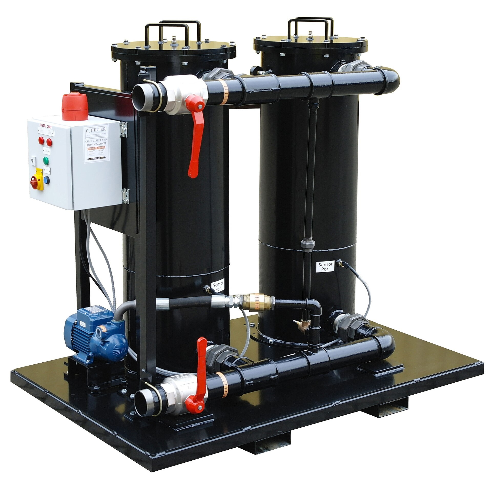

Eron urushida AQSh neft kompaniyalari 130 mlrd dollar foyda koʻrdi, xonadon xarajatlari oshdi
Al Jazeera tahliliga koʻra, AQSh neft-gaz kompaniyalari aprel–sentabr oylarida 130 mlrd dollardan ortiq foyda koʻrdi; amerikaliklar yoqilgʻiga qoʻshimcha 150 mlrd dollar sarfladi, har bir xonadonga $1 150 dan ziyod.

Al Jazeera tahliliga koʻra, AQSh neft kompaniyalari Eronga qarshi urush davrida — 2026-yil aprel–sentabr oylarida — 130 mlrd dollardan ortiq foyda koʻrdi. Istеʼmolchilar esa asosiy tovarlar uchun ancha koʻp toʻladi.
Foyda uch baravar oshdi
Oʻtgan yili, AQSh–Isroil urushi boshlanishidan oldin, neft narxi pastroq boʻlgan oʻsha davrda kompaniyalar jami 47 mlrd dollardan kam foyda koʻrgan edi. Urush davrida neftning oʻrtacha narxi barreliga 90 dollarga yetdi (2022-yildagi 100 dollarga yaqin daraja). ExxonMobil choraklik foydasini 15,4 mlrd dollar (bir yil avval 7,5 mlrd), Chevron esa 9,9 mlrd dollar (bir yil avval 3,5 mlrd) deb eʼlon qildi.
Xonadon xarajatlari
Braun universiteti «Climate Solutions Lab» hisobiga koʻra, urush 28-fevralda boshlanganidan beri amerikaliklar benzin va dizelga qoʻshimcha 150 mlrd dollar sarfladi — bu har bir xonadonga 1 150 dollardan ortiq degani. Valero Energy uchinchi chorakda 6,83 mlrd dollar (olti barobar oshish), Phillips 66 esa 5,62 mlrd dollar rekord choraklik foyda eʼlon qildi.

Jahon bozoriga taʼsiri
Jahon banki maʼlumotiga koʻra, 2026-yilda tovar narxlari 23 foizga oshishi kutilmoqda. BMTning Oziq-ovqat va qishloq xoʻjaligi tashkiloti (FAO) hisobiga koʻra, sentabrda jahonda oziq-ovqat narxlari 1,5 foizga koʻtarildi. «Gulf States Insights» tahlilchisi Jeffri Miller urush jahon neft va neft mahsulotlari bozorida soʻnggi yillardagi eng yirik taklif tomonidagi zarbani keltirib chiqargani qayd etdi.
Tahlilchi fikri
Crude producers gain from higher oil prices, while refiners capture exceptional margins.
— Naser al-Tamimi, ISPI tahlilchisi